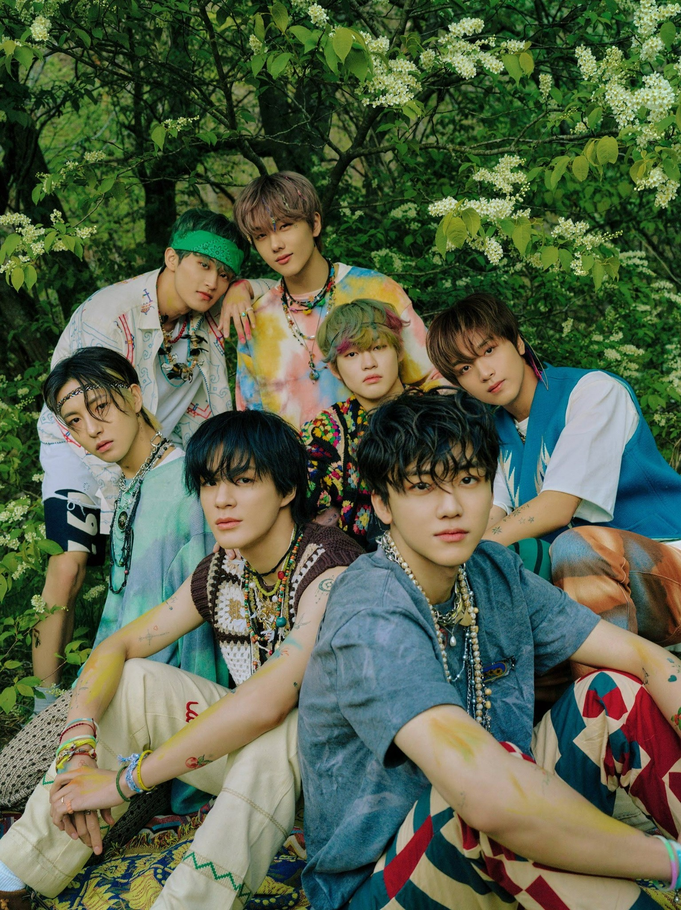

MORE TO EXPLORE
在舞台上，繼續發光。
✳
01 / LIVETHE DREAM SHOW
回顧 DREAM 的現場舞台、演唱會片段與彼此陪伴的時刻。
觀看官方相關影片 ↗♫
02 / VIDEOMUSIC VIDEO
從代表作品的 MV，走進每一次充滿特色的音樂世界。
前往官方頻道 ↗↗
03 / BEHINDBEHIND THE SCENES
透過幕後花絮，認識成員在舞台之外的日常與相處。
尋找幕後影片 ↗外部影片連結導向官方頻道或 YouTube 搜尋頁。本站不自行上傳或重製受版權保護之影音。